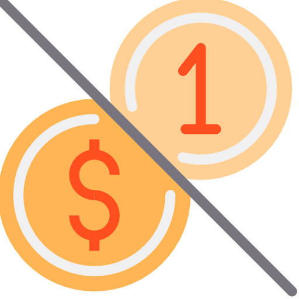

L' amour Café

Informações sobre a lanchonete
Nome: L'amour Café
Localização: R. Trinta e Seis, 115 - Loanda, João Monlevade - MG, 35931-014
Horário de funcionamento: Seg à Sex de 09:00 às 21:00
TABELA DE PREÇOS
| Descrição | Preço | Descrição | Preço |
|---|---|---|---|
| Achocolatado 200ml | 2.50 | Café com Chantilly | 1.50 |
| Café com leite 200ml | 2.50 | Café grande 140ml | 1.00 |
| Café pequeno 80ml: | 0.50 | Cappuccino 200ml: | 4.00 |
| Cappuccino 200ml: | 2.00 | Chá 150 ml | 2.00 |
| Leite com Nescau 250 ml | 3.00 | Leite quente 200 ml | 2.00 |
| Pingado 150 ml | 1.00 | Refrigerante 350 ml | 3.50 |
| Suco lata 350 ml | 3.90 | Suco natural de limão 300ml | 3.00 |
| Suco natural de laranja 300ml | 4.00 | Bolo de pote | 6.00 |
| Coxinha | 3.50 | Croquete de Pizza | 3.50 |
| Empada | 4.50 | Espetinho de Frango | 4.00 |
| Kibe | 3.50 | Misto Quente | 3.50 |
| Pão de Queijo | 3.00 | Pastel de carne/frango | 3.50 |
| Pudim | 2.00 | Sanduíche natural | 3.50 |
| Bolo caseiro | 3.50 | Pizza brotinho | 8.00 |
| Pizza grande | 10.00 | Pizza Mini | 5.50 |

DADOS ESTATÍSTICOS
Baseado numa parcela de 50 alunos da Ufop que responderam a pesquisa
Média de clientes: 52 %
Frequência de consumo: De 1 à 2 vezes por semana
Lanches com maiores demandas:
RELAÇÃO COM OUTRAS LANCHONETES
Satisfação do cliente:
Em geral, a maioria dos clientes ficam satisfeitos
com a lanchonete, se
igualando com as suas duas concorrentes, há pontos a melhorar para
aumentar
ainda mais sua satisfação.
AVALIAÇÃO DESTE SERVIÇO
Atendimento: 4 (Muito Bom)
Opções: 3 (Bom)
Espaço: 4 (Muito Bom)
Qualidade: 3 (Bom)
Preço: 2 (Regular)
COMPARATIVO ENTRE AS AVALIAÇÕES
Atendimento:
Todas as lanchonetes possuem um ótimo atendimento
Produtos:
A lanchonete possui
variedades de lanches, a Madá possui menos
variedades e a Miguelito lanches possui mais variedades do que a
L'amour Café.
Espaço:
Possui um espaço considerado muito bom, pois se localiza dentro
do Campus e está no primeiro andar do bloco D, o que faz ser considerado
Smelhor do que da Madá e Miguelito.
Qualidade:
Não tem uma qualidade ótima em seus lanches, mas satisfaz os clientes,
porém a lanchonete Miguelito tem lanches de melhor qualidade.
Preço:
Seu preço não é acessível para
estudantes universitários, é recomendável
trazer lanche de casa, ou consumir em outras lanchonetes ao redor do Icea.
AVALIAÇÃO GERAL
Avaliação L'amour Café
| Característica | Avaliação |
|---|---|
| Atendimento | 4 |
| Espaço | 4 |
| Opções | 3 |
| Qualidade | 3 |
| Preço | 2 |
| Custo-Benefício | 2 |
| Promoções | 4 |
- Comodidade
- Espaço
- Atendimento
- Preço
- Tempo de espera
- Custo Benefício
- Melhorar a agilidade do atendimento
- Lanches mais baratos, com boa qualidade
A lanchonete L'amour Café fica em 2º lugar entre as 3 lanchonetes localizadas no entorno da Ufop.
A pesar de possuir ótimos lanches, grande variedade e se localizar dentro da UFOP, os preços são
considerados caros se comparados aos concorrentes.
Outro fator a ser levado em consideração é o tempo de epera na fila, sendo cusado como um dos principais
pontos negativos da lanchonete.
Não-recomendado na relação preço-qualidade